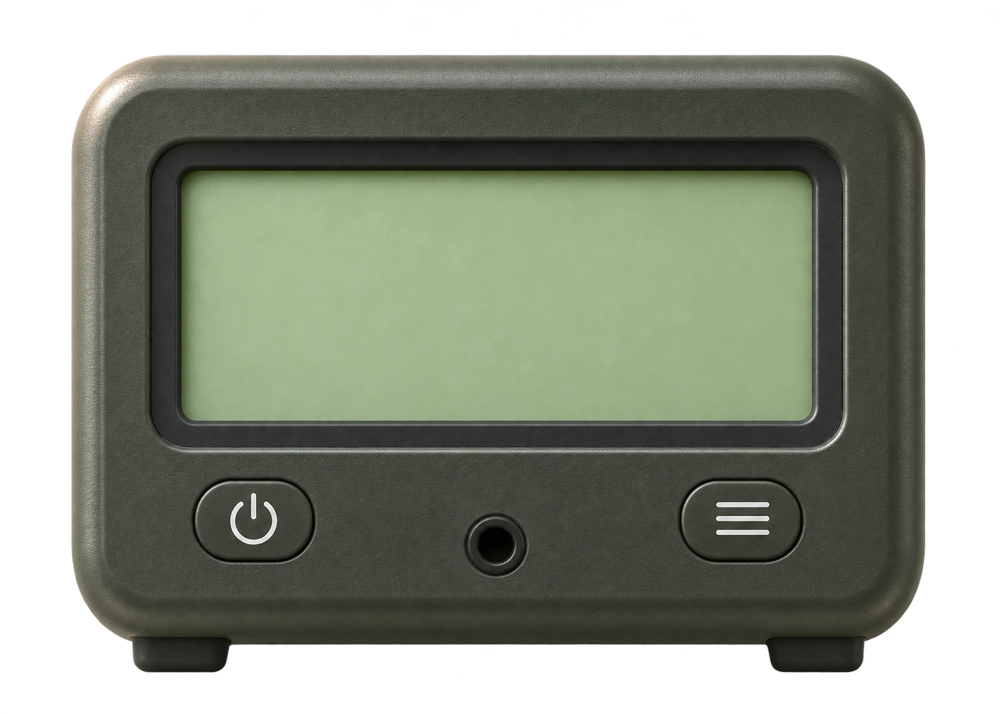

看見被照亮
地表反射的可見光
進入眼睛。
小葵剛替兩杯水記下溫度，整理了幾樣器材，熱水和冷水的讀值就變了。她想知道水和周圍發生了什麼事，也想找出讓水溫維持久一點的方法。阿公提議，先追蹤溫度的變化，再找出熱傳遞的路徑。

熱傳方向：水溫與環境溫度的比較
在房間裡，熱水變涼、冷水變暖；可是冷水放進冰箱，卻會更冷耶！
同樣是冷水，周圍的溫度不同，變化就不一樣。如果周圍比熱水還熱，又會怎樣呢？
 等待觀察等待觀察
等待觀察等待觀察熱由高溫處傳向低溫處。
流光為熱傳方向示意；切換環境回到起始水溫。
準備好，按開始觀察。
「原來不能只看水有多冷、多熱，還得比較它和周圍環境的溫度！」
水溫描述冷熱，吸熱、放熱描述的是因溫差而傳遞的能量。換成兩個物體彼此傳熱，最後也會同溫嗎？
熱平衡：物體之間及與環境的熱交換
一塊變冷、一塊變暖，它們最後會停在哪個溫度呢？
隔熱盒能減慢熱交換，卻不能完全隔絕。它們最後會跟誰一樣暖呢？
器材圖片載入中…
左右拖曳鋁塊，讓它們貼合或分開
左右方向鍵移動金屬；End 貼合另一塊，Home 往外分開。
初溫 A 60°C、B 20°C，室溫 25°C。時間與傳熱速度為教學示意。
原來拉開後溫度還會慢慢變；貼合時，兩塊就更快變得一樣暖！
兩塊同溫後，仍會和 25°C 的房間交換熱；最後和環境同溫，整體才達到熱平衡。熱又是怎麼傳過去的呢？
熱傳導：材料與沿途溫度的變化
只有鍋底在受熱，把手怎麼也慢慢變暖了？
把手和鍋身連在一起。換成木柄，變化也會一樣快嗎？
室溫 25°C・相同加熱條件

電熱板尚未開啟；按下「開始加熱」，讀數會自動更新。
原來熱會從鍋身傳到接頭，再沿著把手傳過來！
這是熱傳導。木材也會傳熱，只是較慢，所以常被用在握柄上。
熱對流：水與空氣的流動
鍋底把熱傳給水，可是上面的水沒有碰到鍋底，也會慢慢變熱。熱是怎麼到上面去的呢？
水也會流動呀。底下的水受熱後，會留在原處，還是跑到別的地方？
觀察場景載入中…
尚未開始
點擊電熱板或按下「開始觀察」，留意受熱處與兩側的流動。
流動方向與相對冷暖為示意。
沿著箭頭，觀察受熱處的水與周圍的水各往哪裡移動。
以室溫附近、下方持續受熱並向周圍散熱的情境示意。箭頭與顏色用來比較流動及相對冷暖，不是固定流路、實際流速或溫度量測；空氣的流動以箭頭顯示。
原來是水和空氣自己在移動，也把能量帶到別的地方了！
對，這就是對流。往上走的是受熱的水或空氣。可是太陽和地球中間隔著太空，能量又怎麼傳過來呢？
熱輻射：能量傳來與地表受熱
陽光照亮地面，也會讓地面變暖。這兩件事有什麼關係？
陽光本身就帶著能量呀！有些被地面反射，有些被吸收。吸收進去的能量會讓地面受熱。
陽光照亮地面，也能讓地面受熱，這兩件事有什麼關係？
觀察場景載入中…
太陽輻射包含可見光、紅外線等；它們都攜帶能量。
地表反射的可見光
進入眼睛。
地表吸收
輻射能量。
吸收能量多於散失時，溫度才會上升。
尚未開始
點擊太陽或按下「開始觀察」，追蹤能量到達地表後的變化。
可見光與紅外線被吸收後，都可能使物體受熱。
天體大小、距離、箭頭速度與升溫曲線為示意。
陽光就是太陽發出的電磁輻射，包含可見光、紅外線等。看見地表被照亮，與地表吸收能量而受熱，是不同的觀察結果；可見光與紅外線都能攜帶能量。
本圖追蹤一部分到達地表的太陽輻射；大氣也會吸收、散射或反射部分輻射。反射箭頭只示意部分能量離開地表，並非岩石只朝一個方向反射。
地表也會向周圍散失能量。這段曲線示意吸收能量多於散失的一段受照期間，沒有實測溫度或真實時間尺度，也不代表地球整體平均溫度。箭頭的粗細與數量不表示能量比例。
物體即使沒有發出可見光，也會發出熱輻射。
原來看見地面變亮和地面受熱，是太陽輻射到達後的不同結果！
對，輻射不用靠空氣傳遞。物體就算沒有發出看得見的光，也會發出熱輻射；想讓熱水保溫久一點，這條路也要一起考慮。
保溫設計：比較不同傳熱路徑
剛剛不是說，沒有空氣也能傳熱嗎？那保溫瓶為什麼還要把空氣抽掉？
因為熱不只走一條路呀！抽去夾層裡大部分的空氣，能減少氣體導熱和流動帶熱的影響；可是輻射仍能穿過真空，要再減少這部分的換熱，就可以加上亮面金屬層。
同時看見瓶體、傳熱路徑與降溫曲線。
同時比較瓶體、傳熱路徑與降溫趨勢
夾層剖面示意
比較場景載入中…
點擊任一瓶身或按下「開始觀察」，比較這一組的降溫快慢。
保溫是減慢熱交換；熱仍會散失，水溫逐漸接近室溫。
尚未開始
抽掉空氣能減少氣體傳熱，可是輻射和瓶口的傳導還在，難怪水還是會慢慢變涼。
保溫就是讓熱交換慢一點，保冷也是一樣。換成冷水裝進瓶子，這次由你判斷熱會往哪裡傳。
單元小測
拖動瓶子，試試桌上的器材。

熱水器材載入中…
● 熱水● 飲料
讀值與觀察進度為教學模擬；不是實際加熱時間。
互動用來比較熱傳方向與方式；時間、顏色與速率為教學示意。
回到溫度與熱單元總覽